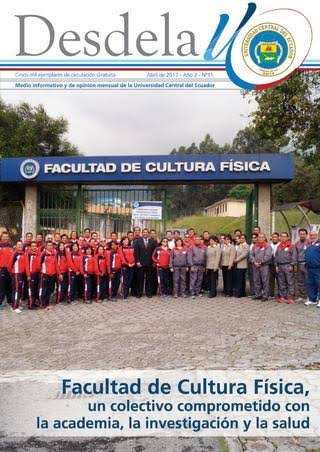

La Facultad de Cultura Física de la Universidad Central del Ecuador es un referente nacional en la formación de docentes, entrenadores y profesionales de la actividad física, comprometida con la excelencia académica y el desarrollo integral de sus estudiantes.
A través de sus carreras de pregrado y posgrado, la Facultad articula docencia, investigación y vinculación con la sociedad, fortaleciendo procesos pedagógicos y deportivos que responden a las necesidades del país.
El Departamento de Aseguramiento de la Calidad acompaña este trabajo garantizando que cada proceso académico y administrativo cumpla con los más altos estándares institucionales.

Cuatro pilares que sostienen el trabajo diario del departamento y garantizan procesos académicos confiables y en mejora constante.
Procesos docentes evaluados bajo estándares institucionales y nacionales de excelencia.
Metodologías y herramientas actualizadas para la enseñanza de la cultura física.
Seguimiento constante a carreras, docentes e infraestructura educativa.
Planes de acción que fortalecen cada proceso académico y administrativo.
¿Tienes alguna consulta para el Departamento de Aseguramiento de la Calidad? Completa el formulario y te responderemos a la brevedad.